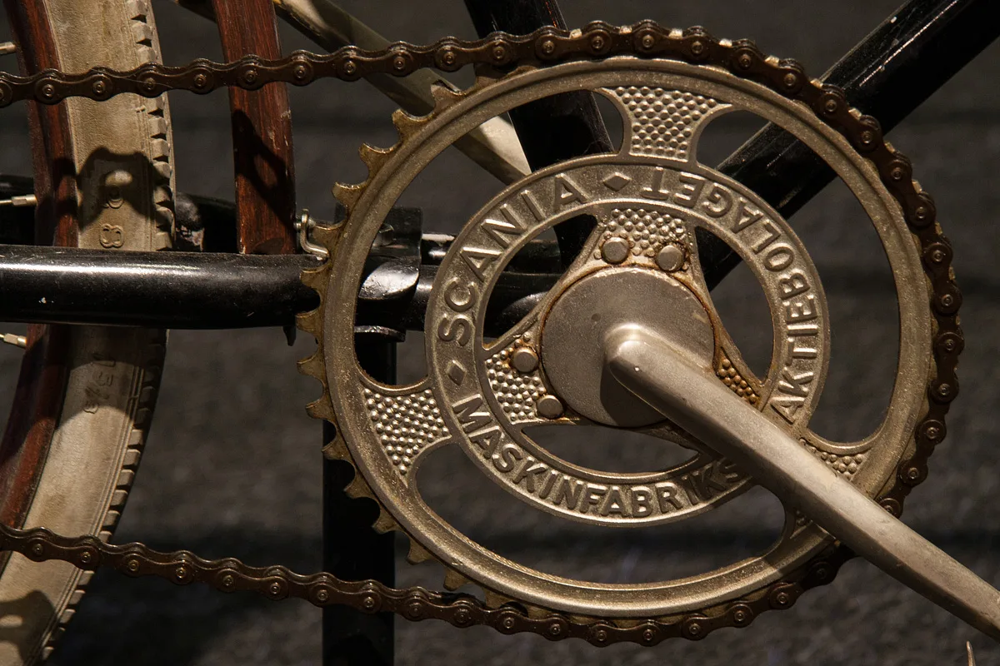
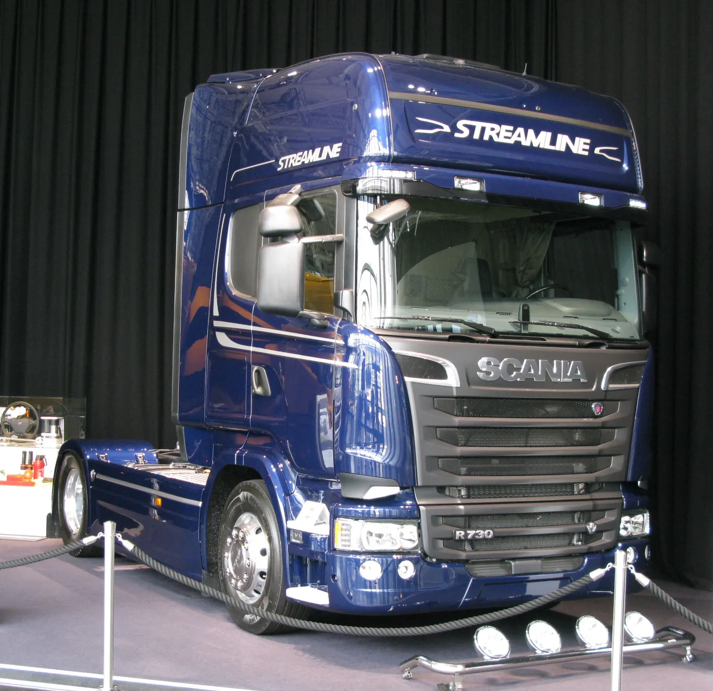

Hoy Scania es sinónimo de camiones de larga distancia, motores potentes y vehículos preparados para trabajar. Por eso su vínculo con las bicicletas suena como el comienzo de una leyenda demasiado buena para ser cierta. Pero existe una base histórica concreta: en 1900, la nueva compañía Scania adquirió en Malmö una fábrica de bicicletas que había pertenecido a la británica Humber & Co. Al mismo tiempo, en otra ciudad sueca, una empresa de vagones llamada Vabis exploraba los vehículos a motor. En 1911, ambas se unieron.
La precisión importa: no fue una única fábrica de bicicletas que, de un día para otro, empezó a fabricar los camiones actuales. Scania y Vabis tenían orígenes distintos, y cada una aportó experiencia antes de convertirse en Scania-Vabis. La historia es más interesante cuando se respeta esa diferencia.
Malmö: la parte de la historia que sí empieza con bicicletas
Según la cronología oficial de Scania, Humber & Co había establecido una filial de bicicletas en Malmö en 1896. Cuatro años más tarde, esa operación pasó a manos de la recién formada Maskinfabriksaktiebolaget Scania. El nombre venía de Skåne, la región del sur de Suecia donde estaba la ciudad.
La fábrica no se limitó mucho tiempo a una sola actividad. Scania amplió su trabajo a otras máquinas y piezas de precisión; luego llegaron los automóviles y, poco después, los camiones. El primer paso no fue cambiar un manubrio por un volante: fue construir capacidad para fabricar, ajustar y ensamblar mecanismos cada vez más complejos.
La siguiente fotografía muestra una evidencia material de esa etapa: una pieza de bicicleta con la inscripción de Maskinfabriks-aktiebolaget Scania. La imagen no permite fechar cada bicicleta que salió de la planta, pero sí pone un objeto concreto detrás de una historia que a menudo se cuenta como mera curiosidad.

Södertälje: Vabis venía de los vagones
La otra mitad de la historia no empieza sobre dos ruedas. Vabis fue fundada en 1891 en Södertälje, cerca de Estocolmo, para fabricar material ferroviario. Su producción inicial incluía vagones de mercancías, coches de pasajeros y tranvías tirados por caballos. Con talleres y conocimientos de estructuras, la empresa tenía una base diferente para entrar en la motorización.
La cronología de Scania sitúa en 1902 el primer camión de Vabis. Un catálogo presentado al año siguiente describía una capacidad de 1,5 toneladas y una velocidad máxima de 12 km/h. Son cifras modestas frente a un camión actual, pero para la época representaban una forma nueva de mover carga sin depender de animales de tiro.
Las dos empresas exploraban el mismo futuro desde oficios distintos: una desde bicicletas y maquinaria; la otra desde vagones. Por eso el relato “Scania empezó con bicicletas” es verdadero solo si se explica qué Scania y en qué momento. La empresa moderna reconoce a ambas como parte de sus raíces.
1911: la unión que dio nombre al camión
En 1911, Scania y Vabis se fusionaron para formar Scania-Vabis. La fecha figura en la historia corporativa. La unión reunió instalaciones, capacidades industriales y experiencias de dos ciudades. El vehículo de portada, fabricado en 1919, muestra un resultado de esa etapa conjunta, no una bicicleta convertida literalmente en camión.
Los primeros años no fueron una marcha triunfal sin interrupciones. Scania recuerda que la depresión posterior a la Primera Guerra Mundial llevó a la empresa a graves dificultades financieras en 1921. Ese episodio ayuda a bajar el tono mítico: la marca que llegó a ser conocida por camiones pesados tuvo que atravesar cambios de mercado y de organización, como tantas otras industrias.
De máquina pionera a vehículo de trabajo especializado
La evolución no se explica únicamente por hacer motores cada vez mayores. Scania-Vabis incorporó soluciones para diferentes tareas: transporte de mercancías, buses y vehículos especiales. En 1911, por ejemplo, la cronología oficial registra la entrega de un bus construido en Suecia. La empresa fue aprendiendo a diseñar conjuntos completos que respondieran al trabajo de sus clientes.
La imagen del viejo CLc también invita a mirar la distancia recorrida. Su cabina, sus ruedas, el puesto de conducción y la plataforma de carga pertenecen a una época en la que el transporte motorizado todavía estaba formando sus hábitos de uso. Comparar esa unidad con un modelo posterior no significa que las piezas sean compatibles; significa que el problema de fondo —mover personas y mercancías con fiabilidad— persistió mientras cambiaban las soluciones.
El V8 y la modularidad: cómo nació la fama moderna
El salto hacia la reputación que muchos transportistas asocian hoy a Scania llegó mucho después de las bicicletas. En 1969 la marca introdujo un V8 turboalimentado de 14 litros y 350 hp. La propia Scania lo presenta como un hito por su potencia y su entrega de par a bajas revoluciones. Era una respuesta a necesidades de transporte pesado muy distintas de las del primer camión de 1,5 toneladas.
Otro paso fue la modularidad. En 1980, Scania lanzó la gama GPRT o serie 2, descrita por la empresa como su primera familia de producto completamente modular. La idea era combinar un conjunto controlado de motores, cajas, ejes, bastidores y cabinas para atender aplicaciones diversas. La documentación oficial explica que esa arquitectura aumentó las variantes disponibles sin obligar a diseñar cada camión desde cero.
La fotografía siguiente muestra un R730 de 2015 conservado en exhibición. No es un modelo de 1900 ni el V8 original de 1969: sirve para visualizar cuánto se había transformado la propuesta de la marca más de un siglo después de la fábrica de bicicletas.

La historia también llegó a la Argentina
Para los lectores argentinos, esta evolución tiene una continuación cercana. Scania Argentina fecha en 1976 la inauguración de su planta en Tucumán y el inicio de sus operaciones comerciales locales. En 2026 la compañía celebró medio siglo de presencia en el país. Esa historia local no empezó con las bicicletas suecas, pero pertenece a la misma trayectoria industrial.
La relación entre una marca y una flota no se mide solo por el emblema de la parrilla. Servicio, disponibilidad de repuestos y conocimiento técnico cuentan tanto como el camión nuevo. La modularidad puede ayudar a organizar familias de componentes, pero no convierte todas las piezas de Scania en intercambiables: año, serie, motor, transmisión y número de chasis siguen siendo indispensables para una identificación correcta.
La respuesta corta, sin perder la historia
Sí: una parte de los orígenes de Scania está en las bicicletas. La compañía de Malmö compró una fábrica de ese rubro en 1900. Pero la otra parte nació nueve años antes, cuando Vabis empezó con vagones en Södertälje. Se unieron en 1911 y, con décadas de desarrollo, la marca llegó a los camiones pesados que conocemos hoy.
La “leyenda” no nació de una única invención milagrosa. Se construyó paso a paso, entre cambios de producto, dificultades económicas, motores nuevos y decisiones de diseño. Para una mirada más amplia sobre modelos y etapas, se puede continuar con nuestra historia completa de los camiones Scania.